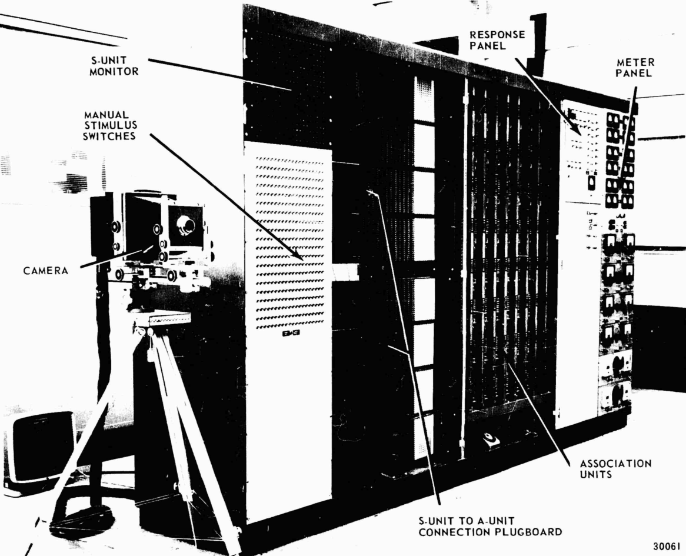

The Beginning
History of AI from 1943 to 1957
Today artificial intelligence (AI) is everywhere. We use it to translate texts, to write emails and even to make pictures. But AI is not a new idea. Its story started more than eighty years ago, and it is full of big hopes, big problems and big surprises.
1943: The First Artificial Neuron
The story begins in 1943. Two scientists, Warren McCulloch and Walter Pitts, wrote a paper with the first mathematical model of an artificial neuron, inspired by the cells of the human brain. A real neuron receives signals from other cells and, if they are strong enough, it "fires". In their model the output was simply 1 or 0. They also showed that a network of these simple units could, in theory, calculate any logical rule, like AND, OR and NOT. It was the first time someone described thinking as a kind of calculation that a machine could also do. Modern neural networks are still built on this basic unit.
1950: The Turing Test
In 1950 the mathematician Alan Turing published a paper called "Computing Machinery and Intelligence". It opens with the question "Can machines think?", but Turing himself found the question too vague, since nobody can define "thinking" precisely. So he replaced it with a game, today known as the Turing Test: a person chats with a machine and with a human, and if the person cannot tell which one is the machine, the machine passes. The idea is that we judge the intelligence of other people only from what they say and do, so the same rule can be used for machines.
During the Second World War Turing had worked at Bletchley Park, in England, breaking the German army's secret codes. In the 1950 paper he also predicted that by the year 2000 a computer would fool an average interrogator about 30% of the time after five minutes of conversation.

1956: The Birth of AI at Dartmouth
1956 is usually considered the year AI was born. That summer a small group of researchers met for a workshop at Dartmouth College, in the USA, organized by John McCarthy, Marvin Minsky, Claude Shannon and Nathaniel Rochester. Their proposal claimed that every aspect of learning or intelligence could be described so precisely that a machine could simulate it. It also listed the problems they wanted to work on: making machines use language, form concepts, solve problems that only humans could solve, and improve themselves. These are still some of the main goals of AI today. It also asked the Rockefeller Foundation for 13,500 dollars to pay for the meeting. The term "artificial intelligence" was used for the first time in this proposal, by McCarthy.
1956: The Logic Theorist
At the same event, Allen Newell and Herbert Simon presented the Logic Theorist, a program that proved mathematical theorems. It proved 38 of the first 52 theorems in Principia Mathematica by Whitehead and Russell, and for one of them it found a shorter proof than the one in the book. The program did not try every possible combination, which would have taken far too long. It used heuristics, simple rules of thumb like the ones a mathematician uses, to choose the most promising steps. Searching in a smart way instead of trying everything became one of the basic ideas of AI. The researchers were very optimistic. In 1965 Simon wrote that within twenty years machines would be able to do any work a man can do.
1957: The Perceptron
In 1957 Frank Rosenblatt invented the Perceptron, a simple neural network that learned to recognize patterns, like shapes, by adjusting its own numbers, called weights. It was the first machine that could learn from examples. Nobody wrote the rules for it: the Perceptron was shown many examples, and every time it gave a wrong answer its weights were corrected a little, until the answers became right.
Rosenblatt worked at the Cornell Aeronautical Laboratory, with funding from the US Navy. The hardware version, the Mark I Perceptron, used a camera made of 400 light sensors arranged in a 20 by 20 grid. In July 1958 the New York Times reported that the Navy expected the machine to one day walk, talk, see, write and even be conscious of its existence.
